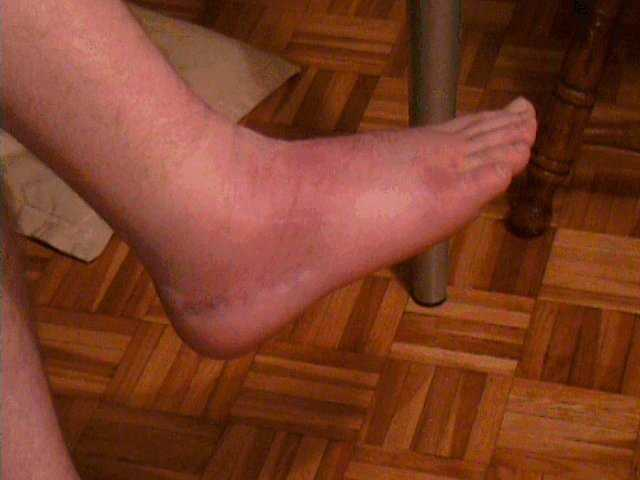

The quick beer
It's a long and drawn out story covering pain, suffering, triumph and beer. Admittedly mostly beer. Actually it's so drawn out
that the really sick bar stewards amongst you will probably just head for part 5 :-)
- 1 - I broke my foot
- 2 - Which then caught fire
- 3 - They say it could be serious!
- 4 - But it isn't
- 5 - But they're gonna have their pound of flesh anyway
- 6 - I tried to escape on a moon rocket
- 7 - But failed miserably
You'd have to be seriously enthusiastic to read it all.
Wednesday 17th July '02 - I broke my foot
I'd just finished some
video editing
of a party a few days before and thought I'd
reward myself with a quick beer. It was quite late, 11pm or so but bars here in
Germany are sometimes open all night. "Just a quick beer" I thought. So I left the
boss at home and having saved some
leftover tuppences
for the past month, I had enough for a pint.
When it came to leave the bar, I'd had four beers - as is customary when you go for
a quick beer. For reasons beyond me, the barman asked me and another chap to leave through
the back door. It was dark, unlit and I didn't see the three stairs just through the doorway.
I went "a over t" and landed quite heavily on the side of my right ankle.
Next morning I end up in casualty. The foot and ankle had swollen like a balloon and it's
painful just to look at, forget trying to walk or even rest it on the floor.
Following some x-rays they confirm that the ankle isn't broken (relief) but seeing it is so
painful, they strap it up, put on some gel and send me home on crutches to return the next
day for a check up.
Next day I still can't even look at it due to the pain and get back to casualty. The doctors
seem a little bewildered by the amount of swelling and pain, given that the ankle isn't broken.
A more senior doctor is called who recommends an x-ray of the foot. This turns up a small
fracture on the outside of the foot where the ligament had torn a piece of bone away :-(
Apparently it's not a serious structural fracture, but as the more senior doctor pointed out
(with a big grin on his face) it's one of the more painful.

it doesn't look so bad, surely?
Wednesday 7th August '02
I've spent tha past three weeks basically immobile. Although I've got crutches, the pain of
even swinging the leg is too much. Other than regular checkups at the hospital as and when
they command, I've basically been stuck at home on my backside (more about that later) with
my leg in the air on cushions.
But now, three weeks after the accident, I'm starting to be able to put a little weight on the
ankle. I'm also starting to think there is something seriously wrong with the ligaments. Doctor
recommends I start some physiotherapy which should hopefully restore some movement in the ankle
and get things working again.
I make arrangements for Physio to start the following day, for 8 days.
When I meet the physio on the Thursday I'm beginning to change my mind. He's a
big strapping chap
and I've heard how physical these physios can get. The reality is that it does hurt but afterwards
you begin to feel the benefit.
On Friday I notice that the calf is starting to hurt, it feels like a burning sensation in the
muscles but the physio says it's quite normal following so much inactivity. It's possible the
lymph ducts are blocked and gives some lymphatic massage, recommending that I see about getting
lymph drainage.
The following Saturday I manage to make it to the local for a beer. Being a real glutton for
punishment I even make it to the same bar :-) It's then that I start to notice the whole lower
leg swelling up, the forementioned burning sensation is getting worse and it's extending towards
the knee.
By Sunday I've got the same burning in the groin and I can feel it starting to extend downwards and
joining up with the same sensation in the calf.
Monday 12th August '02 - The foot caught fire
This burning is not funny now. It's joined up along the entire leg, accompanied by a thick red
line on the skin. I'm finding it excruciating to spend any time upright, and getting out of bed
from horizontal to vertical in the morning is taking twenty minutes. At this point, even though
my foot is getting better, I can't walk anymore. The physio tells me off for depending on the
crutches, but on seeing my leg sends me straight down to casualty.
They take a look and send me down to radiography (ever feel you're unwanted!) where I'm told
to take off my trousers and take a seat. The radiographer is running around asking for a bucket.
"Who's nicked my bucket" this sort of thing. I'm thinking my poor German must have failed me,
what on earth would she want a bucket for?
To put in hot water - and my foot - and a bottle of something. Wierd. Then it dawns on me,
venography
.
Yep, for those of you who've never had radio opaque liquid replace the red stuff in your veins
it's no fun.
During the venography, they keep pumping this stuff in through a small needle near the big toe.
It's not really painful, but very wierd and you want to believe it's painful. After the syringe
(about 250 or 500ml I think) was empty I thank god it's over. Then they pumped in the other syringe :-(
Diagnosis: no DVT. Which was nice :-)
Back in casualty they tell me I have
Thrombophlebitis
. Now it doesn't matter what language you
speak, or where you are in the world - my handy travel book says that anything ending with "itis"
means
you're not well.
They put on some gel, strap my entire leg up tight and send me home with instructions that if
it's not better in a week come back.
The following morning I ring the physio and explain I can't make it due to the fire hazard of
bringing a burning leg into his office.

assume the pose
Thursday 15th August '02
It's bad. My leg is now virtually seized up, I can't move the knee in any direction and I can't
move the thigh in any direction. They are both completely locked solid in the position I woke
up in - nothing will move them. The pain is awfull and anything more than 10 seconds upright
results in someone throwing more fuel on the raging inferno that was once my leg.
After first tightening all the bandages a bit (which seems to ease it) I'm back in casualty getting
lots of tut tuts for still being on crutches four weeks after the ankle injury. I try to explain in
my pigeon German that it's not my foot it's my leg but I think that my poor linguistic skills or
the pain made it come out more like "**** off you w*** b******s".
My leg has gone from bright red to brown, like someone has poured dye liberally from the groin
downwards, I can't move the knee or thigh, I'm in absolute agony, my ankle is slowly seizing up
from even more inactivity and they put on more bloody gel and some bandages. Sent home again with
the "come back if it isn't better in a week".
So I spend the weekend in bed, I'm getting a dab hand at keeping the leg raised having only slept
flat on my back with my leg up for the past four weeks.
I managed to read a little about thrombophlebitis and one thing I'm sure of is that inactivity is
a big factor in it's causes. So once an hour I get out of bed (again taking 20 minutes) and do my
utmost to get some weight on the foot while hobbling for a lap of the flat.
Each morning I'm stabbing myself in the stomach with
Subcutaneous Heparin
to keep the thrombophlebitis
developing into more clots or
an embolism.
Basically living in fear of the slightest little pain thinking it could be the one.
Monday 19th August '02
Not only is it not getting any better, I've noticed new red patches on the thigh, separate to
the old stuff. Great, not only is my greater saphenous vein clotted from groin to foot they're
now popping up where they fancy. Like they're inviting their mates round.
Back to casualty, more gel, more bandages and "come back if it isn't better in a week".
Thursday 22nd August '02
Another new red patch has appeared. This is getting scarey. Back to the hospital. More gel,
more bandages, prescription for a compression stocking and come back if it isn't better in
a week.
Monday 26th August '02
This is getting silly now. I'm starting to truly believe that doctors around the world are
starting to notice a serious fall in the number of cases of clotting they're seeing. It's obvious
isn't it, there are no more clots left in the world, they're all in my bloody leg.
Following a week of this and more gel, I decide it's time to get some expert advice. There's no
way I'm going back to the hospital anymore (they've probably run out of gel and bandages by now
anyway) so I get in touch with the Deutsche Gesaellschaft fur Phlebologie to recommend a vascular
specialist in the area.
On the Friday I telephone the duly recommended specialist's
office
and get an appointment with an
emminent professor of vascular medicine
for the following Wednesday. All I've got to do is
sit it out for the weekend with my compression stocking, keep the leg elevated but always making
sure I keep using the foot.
I'm beginning to wish I'd broken the foot three more times than get this Thrombophlebitis, it
has to be one of the most excruciatingly painful things I've ever experienced.
Wednesday 4th September '02 - They say it could be serious
The professor is a lovely chap who I couldn't praise highly enough. After some ultrasound looking
at the clots in the leg, checking me generally he hits me with it. "Migratory Thrombophlebitis".
It turns out that where thrombophlebitis can be caused by trauma to the vein (ankle injury) coupled
with lack of activity (knackered ligaments), Migratory Thrombophlebitis is usually an indicator of
something far more serious :-(
He tells me I need tests, lots of them. I can schedule them for another day but he recommends I
start there and then. So I do. They take so much blood for testing I start to wish they could
give me some radio opaque liquid to replace it with. I mean you only have a limited supply of
this stuff.
They do EKG, bloods, breathing, blood pressure, reflux and flow studies of the legs, urine, x-rays,
you name it - I think they'v done it. On leaving his office he tells me not to worry just yet, it
might not be serious. Now that was reassurring.
I get home that day and decide to read up on Migratory Thrombophlebitis and wish I hadn't. It seems
it is usually called
Trousseau's Sign
and is a high indicator for cancer, specifically pancreatic,
it can also be an indicator for Becet's syndrome and some other god awfull afflictions. Statistically
I have a very high chance (by my uneducated calculations 93%) of having something terminal, expect
12 months to 5 years.
What a weekend lies ahead. Start planning to get my affairs in order and work out
how I'm going to spend
the last 12 months or 5 years.
Monday 9th September '02 - It's not serious
Back to see the professor for the results of my tests. He whisks me straight into x-ray and starts
taking x-rays around the pancreas. "This is it" I thought, it's the pancreas. Well atleast that's a
quick twelve months and not a tortuous five years of it like some of the others. I'm managing to
retain composure for the moment.
We finally get to his office where he gets the ultrasound and tells me he needs to look at my throat.
Oh no, if it's throat cancer everyone will be saying "told you so" what with the smoking. I then
realise he's not looking at the throat but measuring the lymph nodes in the neck.
At this point I'm fighting back tears, if it's in the lymph glands I've had it, it would be too
advanced to really do much with.
He then gives me the full results. I'm healthy. The reason for the extra x-rays were that in the
first x-rays he thought my lung roots looked inflamed. These extra ones were to get detailed x-rays
of the areas. It's actually comical now but he showed me them, explained this and said "they're not
inflamed, you're just a big, healthy man".
Bloods were fine, EKG fine, breathing fine, liver function fine, kidney function fine. And me? - elated!
Knowing that I regularly
fly around Europe for work
and that I was scheduled to begin much delayed
work in Dublin
the following week he prescribed Heparin to be taken before each flight, just a
precautionary measure really. Trust me, when you're getting an early morning flight.... in between
trying to shower in bandages (2 minutes before the pain really starts), then putting on an elastic
rubber stocking designed to fit a two year old and having to stab yourself in the stomach with a
Heparin injection, it is not an incentive to get out of bed.
He also explained that due to the nature of the Migratory Thrombophlebitis, he would write up all
my results, pictures of the clots etc so that if I should find myself in a hospital in the UK or
Ireland etc, the doctors wouldn't follow the same route of testing.
He explained that I shouldn't worry about getting
varicosis of the vein
which was clotted, it is so clotted
the vein will simply die off and be absorbed by the body. I really could not speak highly enough of
this chap, not just as someone who is clearly expert in his field, but someone who explained,
clarified and reassured.
So Billy is a happy boy and flies to the UK on the Wednesday to spend some much needed time with
his daughter who we hasn't seen since this all started.
Monday 16th September '02
I arrive in Dublin from the UK ready to begin this much delayed contract. I still can't walk properly,
I certainly can't manage more than a 1/4 of a mile at a time and it's agony. I had the foresight to
buy a pair of heavy hiking boots that support the ankle which is making things a little easier but
I'm sure I look quite comical wobbling along the road. Aswell as the hiking boots I bought a 'wheely'
suitcase (which I swear about when other passengers have them) but I still need both hands free for balance :-(
I'm still in the compression stocking with extra compression bandages doubled over the top. It's
the only way I can get out of bed in the morning or spend any amount of time upright during the
day, but I'm managing to get some work done.
Tuesday 15th October '02
Things have been getting gradually better. I've stopped the compression bandages and I'm now just
in the stocking, the foot isn't giving me quite so much grief although it never lets me forget the
accident and can still be quite painful at times. Atleast when I'm in the boots I'm able to walk
almost normally.
But then I wake up in the morning in excruciating pain from the foot. When I look at it, I can
see it's a clot. I know what they look like and feel like (I hold the world monopoly on clots now)
and think it's time to find a doctor. I manage to squeeze it into my (oversized) hiking boot, head
into work to let them know I won't be about for the day and get a taxi to the hospital.
While the hospital was great, they didn't seem to listen too much to the history. I briefly explained
the goings on and said that if it is a clot, it isn't serious as it's in a superficial vein of the
foot (quite an expert by now). I really needed some
precautionary Heparin
for the flight home on
Friday. I already had a followup appointment with the Professor in Germany the following Monday so
I just need to make it to then. I even had my file from the Professor which included all of the
tests, pictures of the clots, measurements etc, but they weren't interested. I really do think they
considered German medicine to be sub standard, even so far as criticising the Professor for not
Warfarinising
me - even though the blood tests in the file showed absolutely normal blood clotting
characteristics. I seriously do not want to be on Warfarin unneccesarily.
They weren't so keen on just prescribing Heparin, wanting to measure the leg. Knowing a little
about these things, I explained that if they were looking for swelling as a result of DVT - I
don't have any. I've never had DVT, don't think I have it now (no symptoms) and in any case my
right leg is now much smaller than my left as a result of muscle wastage over the past three months.
Nevertheless they measured my leg and sent me for Doppler Ultrasound. I know the score with these,
how they check for flow in the veins (believe me I can even tell you the names of the machine
manufacturers having seen so many in the past three months). I was surpised to have all veins
pronounced healthy, given that the Professor had told me the Greater Saphenous Vein was so blocked
that it would never clear and simply die off. There I am being shown the "flow in the healthy Greater Saphenous Vein".
Finally, feeling a little confused I head off with a presription for daily Heparin.
Monday 21st October '02
Well I made it home
without incident,
stomach looks like a punch bag again from all the Heparin
injections but I'm alive.
I go for my followup with the Professor. With ultrasound he shows me where the Greater Saphenous
Vein has already died, sections of it missing having already been absorbed, other sections still
showing the remnants of vein and clot. Remember this is the one that was pronounced healthy in
Dublin the week before!
I'm naturally relieved that it is dieing off. A case of Thrombophlebitis as severe as this does so
much damage to the vein and the valves that if it had remained I would have ended up needing it
stripped in a few years anyway.
He looked at the suspected new clot which had caused me to go to casualty in Dublin and confirms
there either was a clot there and it's gone or the very last inch of Saphenous Vein in the foot
was just inflamed and irritated as it too was getting no blood flow. A prescription for Exhirud
Gel to rub in and hurry up the sclerosing of the vein was all that was needed.
But bad news. It appears one of the tests I'd done the month earlier took a little longer for the
results. The
fecal occult blood test
had proved positive and against a background of Migratory
Thrombophlebitis I needed that checked out. Of course the amount of Heparin I had taken could have been
a factor, but it has to be checked. Great, I'm flying to England on the Wednesday and onto
Dublin either Sunday or Monday so no time to do it. I agree to get back to Germany to take the test
on the Monday (28th) as its a bank holiday in Dublin anyway. I'll just fly direct to Dublin on the Tuesday.
Friday 25th October '02
On the friday in England I get a fax saying they can't make the test for Monday, I need a prescription
and preparation. What? What sort of test needs that? I've already got a flight to the Germany booked
so I figure I'll just get a day at home before heading back direct to Dublin.
Monday 28th October '02 - They want their pound of flesh
This is getting ridiculous, I can't get a flight to Dublin that evening - all full. I can have one
in the morning at a cost of a virgin sacrifice and lifelong debt to Aer Lingus. I'm just trying to
work out what to do when I get a call from the Professors office, they've booked the test for Friday
the 1st November. That sort of answered the problem of getting to Dublin. Email Dublin to let them
know that my one week break has just become two :-(
I head to the doctors, pick up the prescription and instructions. Frightening. This is getting very
unfunny. Doesn't he know I only hurt my foot? He's booked me for a Double Contrast Barium Enema to
check the colon / intestines for whatever gave the positive FOBT test.
For those of you that don't know (I didn't either), a
Double Contrast Barium Enema
is akin to using
your body like a water balloon, first they fill it with liquid and then with air so as to take some
lovely pictures.
Thursday 31st October '02
This is it, the day of preparation. Light breakfast, black coffee or water for the day. I'm only
allowed a soup for lunch and at two o'clock I have to drink the
prescription
I don't know how best to describe it really, I suppose a laxative that would clear a horse might
be apt. It might say X-PREP on the bottle, but trust me I think arse-ease(tm) is more appropriate.
As I read on
Huge's Website
a liquid sh** fuelled moon rocket probably gets the picture across quite well too.
It's funny to think that while you're quite literally dumping litres of liquid, the instructions
tell you to drink atleast three litres of water aswell. Like this thing needs any more fuel? Trust
me, by the end of the day, the rocket exhaust is a burnt out, tender piece of equipment which I'm
sure on any real rocket would be consigned to the scrapyard. It is quite literally suffering the
effects of liquid chemical.
I have a rather sleepless night that night, I'm starving hungry and I'm quite concerned that the
rocket is going to reignite at any time. A couple of false starts in the night and a couple of
real ones. NASA global tracking were probably quite busy.
Friday 1st November '02 - Escaping on a moon rocket
6am, get up and discover the rocket is still threatening lift off. Start worrying about how I'll
make it to the hospital in this state. I really couldn't do it to a taxi driver and sitting on the
underground could be embarassing. I opt for the underground (atleast I'm anonymous) and on arrival
at the hospital head straight for the
ceramic launch pad.
Traditionally it is the safest place to
launch a liquid sh** fuelled moon rocket.
Get shown into a small changing room, get naked and put on one of those daft hospital gowns. Now,
many people complain about the back being open, but for me at 6'4" and built such that I have a
long trunk, it's not my backside I'm worried about, more my mate below hanging out the front. I
discover it's not such a problem if I hunch my shoulders forward and walk slightly doubled. Obviously
this just sticks my backside further out of the back of the gown like I'm mooning.
I'm shown to the x-ray room, have a quick chat with the doctor who's going to do it. Why do they
always insist on the chit chat? I know they want to put you at ease and relax you, but you tell
me, could you relax knowing what they're about to shove up your exhaust?
Answer: A pipe, connected to a bottle containing what looks like white paint and unceremoniously
shoved up the exhaust. I swear that throughout this I had it dribbling out of my ears there was
so much of it. At one point the exhaust/fuel pipe interface disengaged spraying this white stuff
everywhere. So aswell as laying there with the now repositioned pipe sticking out like a lawnmower
handle I've got this kind nurse trying to clear up this mess from all over me. It even looked like
my mate below had been painting without overalls. Really not a dignified way to meet nice looking
nurses is it.
Once thats done, off to the ceramic suite again, this time clenching your buttocks so tight you
think you're going to give yourself a hernia. They seemed quite worried about their clean floor
and I must admit I did consider dropping off a small present for them. Ever given the
Niagara falls
any special thought? Ever wondered who came up with the idea for the
first stage boosters
for the space shuttle? Well I have, and it was someone who had been through this. After 10 minutes on the
loo and a flow rate equivalent to a fire hose, you're ready for round two. A quick clean up, a
clean gown (I'm too tired, in too much pain and too p***** off to worry about hanging out the front
now) and off we go.
Re-engage the pipe, the poor exhaust is starting to feel decidedly unwell now, and it starts. Yes,
I thought the white paint was bad, but this is awfull. They're pumping me up, right up. Remember
Eddie Murphy in the fat suit?
It's awfull, any more and my eyes are going to shoot across the room
like bullets - meanwhile having to squeeze the pipe as tight as I can in case it pops out under
pressure and takes some poor sods eye out.
After ten or fifteen minutes of pictures, rolling around (still with the lawnmower handle up my arse)
on my back, my side, my front, on my other side, back on my back etc it's over. Apart from having the
contents of 200 party balloons in me we're done. Back to the ceramic suite again, ring NASA to warn them,
hold tight in case I get true lift off, and let rip. I truly believe the resonance down below
may have done some serious chaffe
damage to the final stage exhaust
exit.
I don't think I've ever been through something which I thought would be so embarassing, but in reality
is so awfull, uncomfortable and at times downright painful - so much so that you don't have time to
think about the embarassment. I don't know if it's good or bad but nothing was wrong, all is fine from
the exhaust to the fuel storage (stomach) so I went through all that for nothing.
On the positive side, I've had so many tests done and been found to be healthy that at least at this
stage of my life (born 1972 - I'm 30 years old) I guess I'm likely to be around for a few more years yet.
Monday 25th November '02
Would you believe it? We were invited to a wedding today. The idea of going out without my boots fills me with
dread but you look a bit silly wearing a suit and boots. The medical people agree that the boots
will stop me from doing my ankle again but I have to make the break and go without them if I want to walk properly again.
So today for the first time in four months I'm in shoes for the whole day. Wierd, trust me very wierd. Can you imagine it's
the first time in four months that (a) I've walked and (b) I've walked without hiking boots?
I'm still on the regular physio to try to make the ankle good but the problem is not the original injury, it is the
months of not using it. I think I could deal with the pain of having physio but they've also put me in a
bloody compression stocking again to try to reduce the swelling. What - like I look like a masochist?
Okay, so if enough people email me, I'll put up a photo of me in the stocking. But first you'll have to email me:-)
Monday 17th December '02 - No Escape
I had my penultimate physio today. I've got one more session on Thursday and at some point the good Professor wants me back
to see that all is okay. Naturally I'm worried about going anywhere within a mile of his office in case he thinks I'm up
for some more of that medicine.
What can I say - It's been five months since I fell down three stairs, sprained my ankle and suffered a minor fracture in the
foot. I'm still limping, still aching and still wearing a bloody compression stocking. I told you it was a story of pain
and suffering, I'm in pain and you've suffered reading about it :-)
It's hard to believe that a story of a broken foot has taken quite so long to describe, but it is so off the wall I really
wouldn't know which bits to leave out.
So boys and girls, next time you're thinking about a quick drink, come back and read this. Then open
a beer and have one with me :-) Next time you sprain your ankle, I'll bet you a compression stocking
that you'll stay mobile no matter how much it hurts!
{kind=link}
{kind=link}
{kind=link}
{kind=link}
{kind=link}